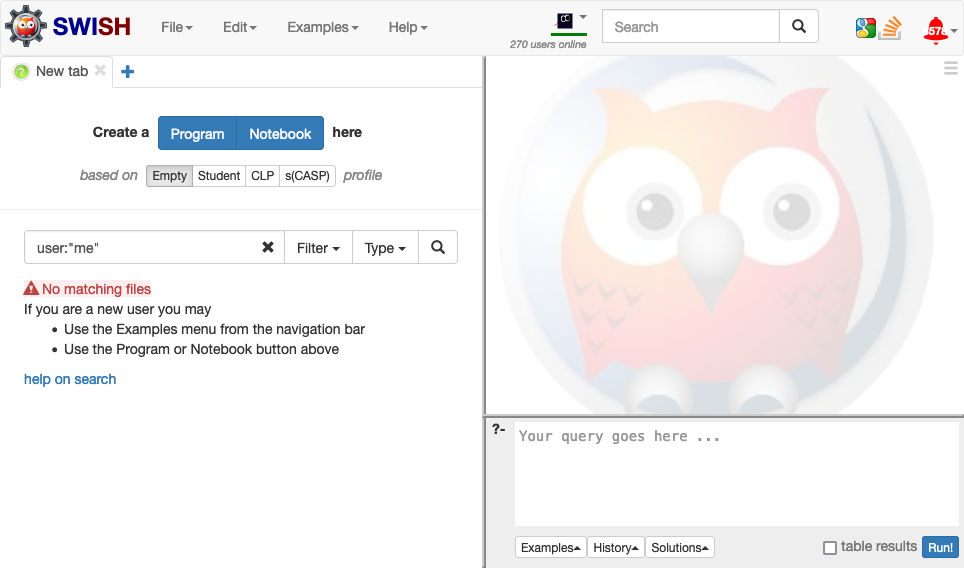
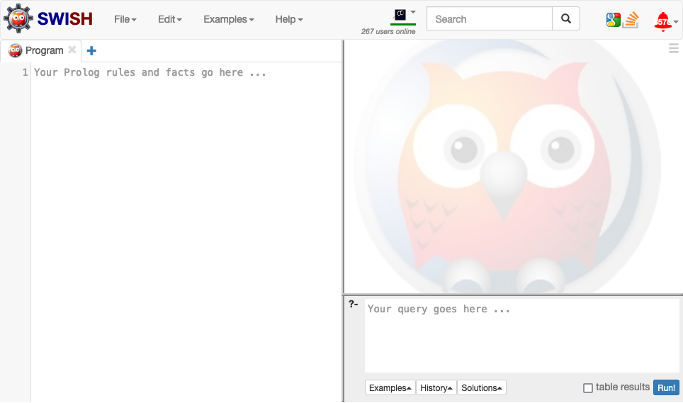
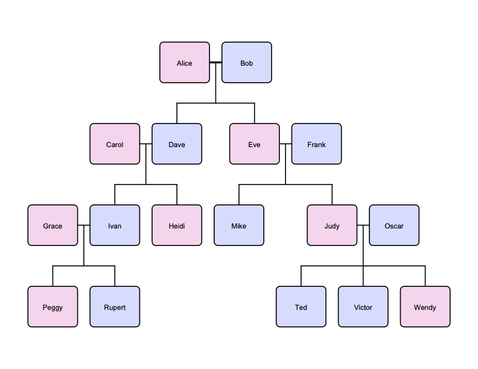
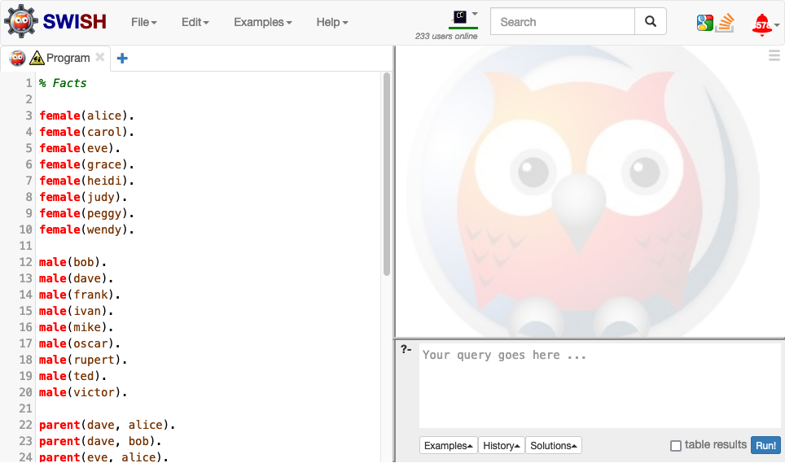
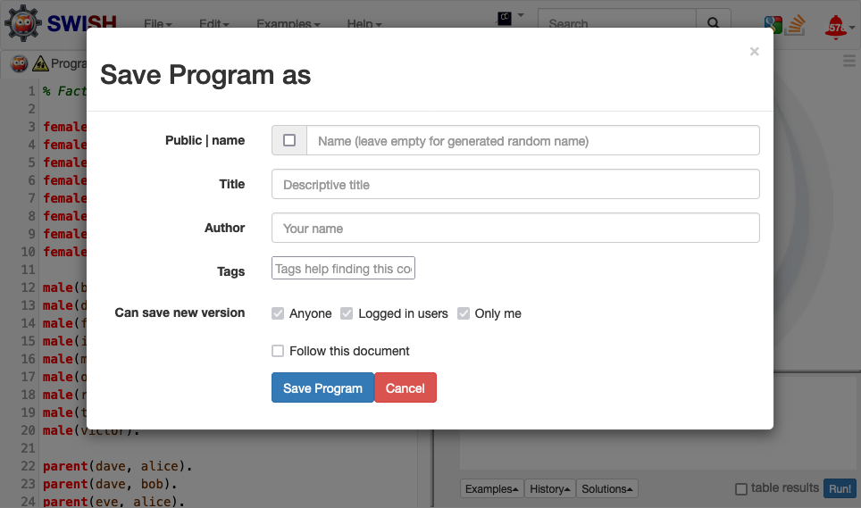
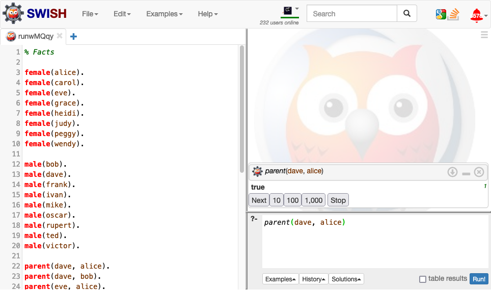
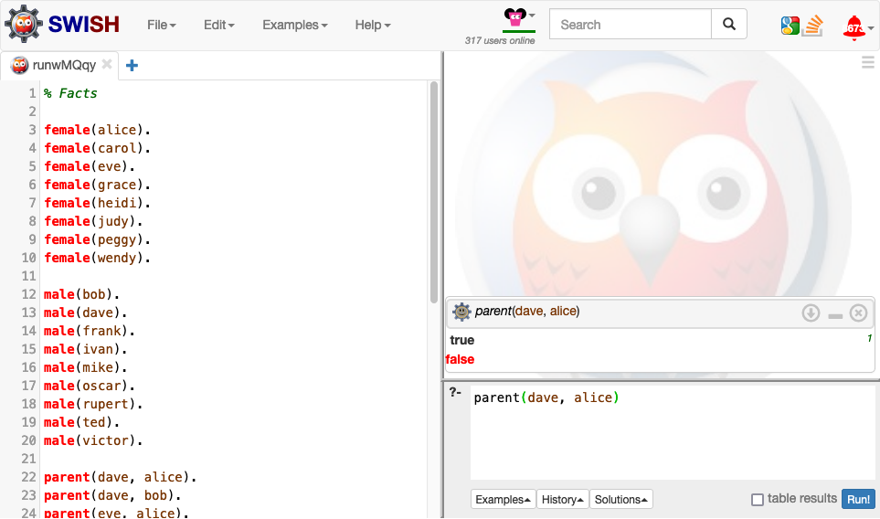
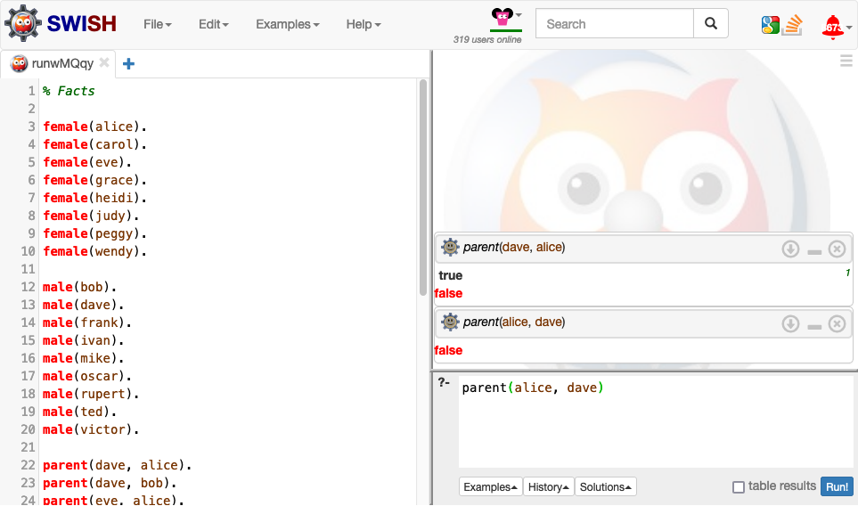

Tutorial 2 - Logic programming
This tutorial provides a brief introduction to logic programming using the SWISH web interface for SWI-Prolog, which is a popular implementation of Prolog.
Getting started
Step 1 - Launch SWISH
Open SWISH in a web browser.

The interface for SWISH is divided into three panels:
- Program panel on the left allows you to create and edit Prolog programs
- Query panel on the bottom-right allows you to input queries to your Prolog program
- Results panel on the top-right displays the results from your queries
Step 2 - Create a new program
In the program panel ensure that Empty is checked and then select Program.

Step 3 - Add some code
Suppose we want to use Prolog to reason about the following family tree:

Add the following Prolog code to the program panel:
% Facts
female(alice).
female(carol).
female(eve).
female(grace).
female(heidi).
female(judy).
female(peggy).
female(wendy).
male(bob).
male(dave).
male(frank).
male(ivan).
male(mike).
male(oscar).
male(rupert).
male(ted).
male(victor).
parent(dave, alice).
parent(dave, bob).
parent(eve, alice).
parent(eve, bob).
parent(ivan, carol).
parent(ivan, dave).
parent(heidi, carol).
parent(heidi, dave).
parent(mike, eve).
parent(mike, frank).
parent(judy, eve).
parent(judy, frank).
parent(peggy, grace).
parent(peggy, ivan).
parent(rupert, grace).
parent(rupert, ivan).
parent(ted, judy).
parent(ted, oscar).
parent(victor, judy).
parent(victor, oscar).
parent(wendy, judy).
parent(wendy, oscar).

The expression parent(dave, alice) is an example of a fact:
parent(dave, alice)means that Alice is a parent of Davefemale(alice)means that Alice is femalemale(dave)means that Dave is male
Note: You might wonder why we used
parent(dave, alice)rather thanparent(alice, dave)to mean that Alice is a parent of Dave. This is just a design choice. Either option is valid as long as you pick one and use it consistently throughout your Prolog program.
The term alice is an example of an atom, and the symbol parent is an example of a predicate. A predicate describes a property or relation over zero or more terms, where an atom is one kind of term.
The expected number of terms for a predicate is called its arity. When referencing a predicate it is common to include both the symbol and the arity separated by the / (forward slash) symbol, e.g. female/1, male/1, and parent/2.
The symbol % denotes the start of a comment. Comments are ignored by the Prolog interpreter.
Step 4 - Save your program
Select File > Save, uncheck the Public option, and select Save.

A random name will be automatically assigned to your Prolog program as shown in the tab name.
You can use this save function and the generated URL to return to your Prolog program in the future.
Queries
Step 5 - Simple queries
In the query panel enter parent(dave, alice) and select Run!.

The query result true means it can be proved from your Prolog program that Alice is a parent of Dave.
Change the query to parent(alice, dave) and select Run! again.

The query result false means it cannot be proved from your Prolog program that Dave is a parent of Alice.
Note: Results from previous queries will remain in the results panel until they are manually closed.
Step 6 - Queries with variables
Change the query to parent(dave, X) and select Run!.
The first query result should be X = alice. Select Next under the query result to cycle through the remaining results.

The term X is an example of a variable. A Prolog interpreter answers queries by instantiating variables with other terms (e.g. atoms) such that the instantiation can be proved from the Prolog program.
Variables always start with an uppercase letter.
The query parent(dave, X) can thus be read as: who is a parent of Dave?
The query results X = alice and X = bob can then be read as: Alice and Bob are parents of Dave.
Note:
X = aliceis returned beforeX = bobbecause the positioning of facts and rules in a Prolog program is significant; it determines the order in which facts and rules are evaluated when answering queries. For example, ifmale(bob)parent(dave, bob)were to appear abovefemale(alice)parent(dave, alice)thenX = bobwould be returned beforeX = alice.
Change the query to parent(X, dave) and select Run!. The query results should be X = ivan and X = heidi.
This example demonstrates that positioning of terms is significant and that consistent usage is required to correctly ascribe meaning to your Prolog program.
The query parent(dave, X) should thus be read as: who has Dave as a parent?
The query results X = ivan and X = heidi can then be read as: Ivan and Heidi have Dave as a parent.
Step 7 - Queries with the anonymous variable
Change the query to parent(_, alice) and select Run!. The query result should be true.
The term _ (underscore) is called the anonymous variable. It can be used in place of a standard variable when you want to check if an instantiation exists but do not care about the instantiation itself.
The query parent(_, alice) can thus be read as: is Alice a parent?
Change the query to parent(_, _) and select Run!. The query result should be true.
The query parent(_, _) can be read as: does a parent exist?
Not a particularly informative query of course, but valid nonetheless.
Rules
Step 8 - Simple rules
Add the following code to the bottom of your Prolog program:
% Rules
child(X, Y) :- parent(Y, X).
The expression child(X, Y) :- parent(Y, X) is an example of a rule with child(X, Y) called the head and parent(Y, X) called the body. The rule can be read as: Y is a child of X if X is a parent of Y or, equivalently, if X is a parent of Y then Y is a child of X.
In the query panel enter child(dave, X) and select Run!. The query results should be X = ivan and X = heidi. In other words, Ivan and Heidi are children of Dave.
This matches the intuitive meaning of the previous query parent(X, dave) where the results said that Ivan and Heidi have Dave as a parent.
Note: It should be obvious that this rule is a simple rewrite of the
parent/2predicate. In some instances this kind of rewriting may aid readability, but in others it may have the opposite effect: cluttering your Prolog program with redundant rules. We are typically interested in rules that are more informative.
Step 9 - Conjunction
Add the following rules to the bottom of your Prolog program:
mother(X, Y) :- parent(X, Y), female(Y).
father(X, Y) :- parent(X, Y), male(Y).
The symbol , (comma) in Prolog denotes conjunction. The first rule can thus be read as: if Y is a parent of X and Y is female then Y is a mother of X.
In the query panel enter mother(dave, X) and select Run!. The query result should be X = alice.
Step 10 - Relational expressions
Add the following rule to the bottom of your Prolog program:
sibling(X, Y) :- parent(X, Z), parent(Y, Z).
In the query panel enter sibling(dave, X) and select Run!. The query result should be true.
Now enter sibling(dave, dave) and select Run!. The query result should again be true, which implies that Dave is a sibling of himself. This of course is not the result we want.~~
The reason for the result is that, while Prolog prohibits different instances of the same variable within a rule (e.g. Z) from having different instantiations, it does not prohibit different variables (e.g. X and Y) from having the same instantiation.
To achieve the desired result we must therefore explicitly enforce an inequality within the rule.
Update the rule as follows:
sibling(X, Y) :- parent(X, Z), parent(Y, Z), X \== Y.
In the query panel enter sibling(dave, eve) and select Run!. The query result should be true.
Now enter sibling(dave, dave) and select Run!. The query result should be false, which is the result we want.
The expression X \== Y is an example of a relational expression. Prolog supports several kinds of relational expressions, with the most common being:
X == Yevaluates to true if termsXandYare equalX \== Yevaluates to true if termsXandYare not equalX = Yevaluates to true if termsXandYunify
Step 11 - Negation
Add the following rule to the bottom of your Prolog program:
grandparent(X, Z) :- parent(X, Y), parent(Y, Z).
cousin(X, Y) :- grandparent(X, Z), grandparent(Y, Z), X \== Y.
In the query panel enter grandparent(ivan, X) and select Run!. Next enter grandparent(mike, X) and select Run!. The results for both queries should be X = alice and X = bob.
In the query panel enter cousin(ivan, mike) and select Run!. The query results should be true, as expected, since we know that Ivan and Mike share the same grandparents Alice and Bob.
In the query panel enter cousin(ivan, heidi) and select Run!. The query results should be true, but this is not what we want since although Ivan and Heidi share the same grandparents, they also share the same parents (and thus are siblings rather than cousins).
Update the second rule as follows:
cousin(X, Y) :- grandparent(X, Z), grandparent(Y, Z), not(sibling(X, Y)), X \== Y.
In the query panel enter cousin(ivan, mike) and select Run!. The query results should be true.
In the query panel enter cousin(ivan, heidi) and select Run!. The query results should be false, which is the result we want.
Step 12 - Disjunction
Add the following rule to the bottom of your Prolog program:
immediate_family(X, Y) :- parent(X, Y); child(X, Y); sibling(X, Y).
The symbol ; (semi-colon) in Prolog denotes disjunction. The rule can thus be read as: if Y is a parent of X or Y is a child of X or Y is a sibling of X then Y is an immediate family member of X.
In the query panel enter immediate_family(dave, X) and select Run!. The query results should be X = alice, X = bob, X = ivan, X = heidi, X = eve, and X = eve.
Note: The reason
X = eveis returned twice is that there are two ways to prove that Eve is a sibling of Dave: via Alice, and via Bob. This kind of duplication is not typically a cause of concern in Prolog, but it can be avoided if deemed necessary.
Replace the rule with the following:
immediate_family(X, Y) :- parent(X, Y).
immediate_family(X, Y) :- child(X, Y).
immediate_family(X, Y) :- sibling(X, Y).
In the query panel enter immediate_family(dave, X) and select Run!. The query results should again be X = alice, X = bob, X = ivan, X = heidi, X = eve, and X = eve.
This example demonstrates that disjunction can be implemented both using a single rule with disjunction in the body, or by multiple rules with the same head.
Note: If in doubt, you should implement disjunction using multiple rules with the same head.
Additional features
Step 13 - Arithmetic expressions
Add the following facts below your existing facts:
age(alice, 91).
age(bob, 92).
age(carol, 61).
age(dave, 62).
age(eve, 63).
age(frank, 64).
age(grace, 31).
age(ivan, 32).
age(heidi, 33).
age(mike, 34).
age(judy, 35).
age(oscar, 36).
age(peggy, 1).
age(rupert, 2).
age(ted, 3).
age(victor, 4).
age(wendy, 5).
Notice that the second term in age/2 is always a number.
In the query panel enter age(oscar, X) and select Run!. The query result should be X = 36.
In the query panel enter age(X, 1) and select Run!. The query result should be X = peggy.
Add the following rule below your existing rules:
adult(X) :- age(X, Y), Y >= 18.
In the query panel enter adult(oscar) and select Run!. The query result should be true.
In the query panel enter adult(peggy) and select Run!. The query result should be false.
Most standard arithmetic expressions (e.g. X > Y, X < Y, X <= Y) can be used in a similar manner, assuming that X and Y are numbers.
Step 14 - Arithmetic operations
Add the following rule to the bottom of your Prolog program:
years_as_adult(X, Z) :- adult(X), age(X, Y), Z = Y - 18.
In the query panel enter years_as_adult(alice, X) and select Run!. The query result should be X = 91-18 but this is not what we want.
Update the rule as follows:
years_as_adult(X, Z) :- adult(X), age(X, Y), Z is Y - 18.
The symbol is is a built-in operator that tells the Prolog interpreter to evaluate Y - 18 as an arithmetic operation.
In the query panel enter years_as_adult(alice, X) and select Run!. The query result should be X = 73.
In the query panel enter years_as_adult(X, 44) and select Run!. The query result should be X = dave.
In the query panel enter years_as_adult(peggy, X) and select Run!. The query result should be false (i.e. because peggy is not an adult).
Most standard arithmetic operators (e.g. X + Y, X * Y, X / Y) can be used in a similar manner, assuming that X and Y are numbers.
Step 15 - Recursion
Add the following rule to the bottom of your Prolog program:
ancestor(X, Z) :- parent(X, Z).
ancestor(X, Z) :- parent(X, Y), ancestor(Y, Z).
In the query panel enter ancestor(peggy, X) and select Run!. The query results should be X = grace, X = ivan, X = carol, X = dave, X = alice, and X = bob.
The definition of the ancestor/2 implements disjunction using multiple rules with the same head. The first rule is the boundary case and the second rule is the recursive case. This kind of recursive definition forces the Prolog interpreter to explore the space of solutions with the boundary case providing a terminating condition that avoids an infinite loop.
Note: Much of the power of Prolog comes from recursion, but it can be tricky to use correctly. When using recursion it essential that you always account for the boundary case.
Step 16 - Lists
Prolog denotes a list by a series of elements inside square brackets ([ and ]).
Add the following rule to the bottom of your Prolog program:
ages(List) :- findall(X, age(_, X), List).
The predicate findall/3 is a built-in predicate that instantiates a list (e.g. List) of terms (e.g. X) matching a query (e.g. age(_, X)).
In the query panel enter ages(X) and select Run!. The query result should be X = [91, 92, 61, 62, 63, 64, 31, 32, 33, 34, 35, 36, 1, 2, 3, 4, 5].
List comprehension in Prolog is achieved using the notation [Head | Tail], which splits the list into in its first element (Head) and another list representing its remaining elements (Tail).
In the query panel enter ages([X | Rest]) and select Run!. The query results should be X = 91 and Rest = [92, 61, 62, 63, 64, 31, 32, 33, 34, 35, 36, 1, 2, 3, 4, 5].
If multiple variables are specified to the left of | (vertical bar), separated by , (commas), then multiple elements will be split simultaneously.
In the query panel enter ages([X, Y | Rest]) and select Run!. The query results should be X = 91, Y = 92, and Rest = [61, 62, 63, 64, 31, 32, 33, 34, 35, 36, 1, 2, 3, 4, 5].
Example - Bubble sort
Bubble sort is generally regarded as the simplest sorting algorithm.
The idea is to repeatedly iterate through a list while swapping successive pairs of elements as needed until a full pass is completed without the need for any swaps.

This can be implemented in Prolog by combining recursion, list comprehension, and relational/arithmetic expressions.
Step 17 - Algorithm
Add the following rules to the bottom of your Prolog program:
swap([X, Y | Rest], [Y, X | Rest]) :- X > Y.
swap([Z | Rest], [Z | RestPrime]) :- swap(Rest, RestPrime).
bubble_sort(List, Sorted) :- swap(List, ListPrime), bubble_sort(ListPrime, Sorted).
bubble_sort(Sorted, Sorted).
The first rule uses list comprehension to split the list into its first two elements X and Y along with the remainder of the list Rest. If X is greater than Y (we are assuming here that X and Y are numbers so X > Y is just an arithmetic expression) then the elements are swapped by instantiating a new list as [Y, X | Rest].
If X is not greater than Y then the Prolog interpreter will proceed to the second rule, which skips the first element Z and applies the swap procedure to the remaining elements Rest.
The third rule serves to recursively call the swap procedure until no more swaps are possible, meaning that when the Prolog interpreter proceeds to the fourth rule we can infer that the list is now sorted.
Note: More efficient implementations of bubble sort can be achieved in Prolog using a special non-logical operator but we do not recommend its use for this tutorial series.
Step 18 - Sorted list
Add the following rule to the bottom of your Prolog program:
ages_sorted(SortedList) :- ages(List), bubble_sort(List, SortedList).
In the query panel enter ages_sorted(X) and select Run!. The query result should be X = [1, 2, 3, 4, 5, 31, 32, 33, 34, 35, 36, 61, 62, 63, 64, 91, 92].
In the query panel enter ages_sorted([X | Rest]) and select Run!. The query results should be X = 1 and Rest = [2, 3, 4, 5, 31, 32, 33, 34, 35, 36, 61, 62, 63, 64, 91, 92].
This demonstrates that bubble sort is working correctly and that list comprehension can be applied to the resulting list as usual.
Conclusion
In this tutorial we have had a brief introduction to logic programming using SWISH, including how to write facts and rules, how to submit queries and interpret the results, how to use core language features such as conjunction, disjunction, and negation, and how to use additional language features such as arithmetic expressions, recursion, and lists. These were demonstrated using a family tree example and an implementation of the bubble sort algorithm.
In the next tutorial we will see how AgentSpeak and Jason extend logic programming to allow us to implement belief-desire-intention (BDI) agents.